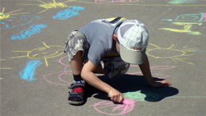

День защиты детей
-

Фото: Тимофей Дьяконов
- Уверен, что для многих россиян появление новой широкой общественной коалиции стало неожиданным, но это, как ни странно, внесло свежую струю в политическую жизнь России накануне выборов в Государственную Думу. Похоже, вместе с экономикой модернизация началась и в политике. Политике противопоказана стагнация и в партии «Единая Россия» это понимают.
Создание Общероссийского народного фронта – это путь к обновлению. Любая партия состоит из людей, и если они подолгу засиживаются на своих местах, развитие прекращается. Общероссийский народный фронт – это отличный «банк» честных, энергичных, целеустремленных людей, которые любят свою родину и готовы отдать все свои силы, чтобы каждому в нашей стране жилось лучше.